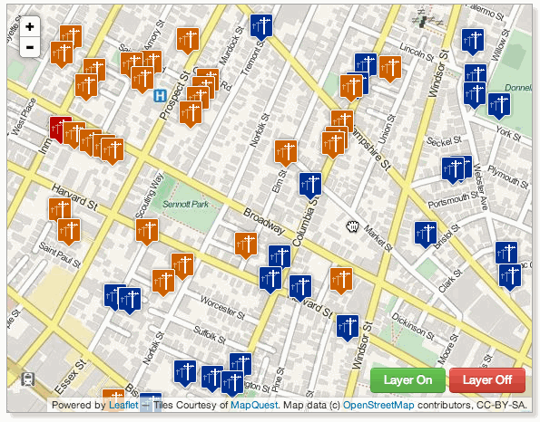

by Jason Sanford / @JCSanford
A simple text format for representing geographic data
{
"type": "Point",
"coordinates": [
-104.998531,
39.753459
]
}{
"type": "LineString",
"coordinates": [
[-104.998507, 39.753776],
[-104.997611, 39.753079],
[-104.998818, 39.752147],
[-104.999682, 39.752825]
]
}{
"type": "Polygon",
"coordinates": [
[
[-104.998521, 39.753770],
[-104.997625, 39.753077],
[-104.998824, 39.752166],
[-104.999696, 39.752830],
[-104.998521, 39.753770]
]
]
}{
"type": "Feature",
"properties": {
"name": "Wynkoop Brewing Company",
"floors": 3,
"beers_on_tap": [
"Rail Yard Ale",
"Rocky Mountain Oyster Stout"
]
},
"geometry": {
"type": "Point",
"coordinates": [
-104.998531,
39.753459
]
}
}
What if:
I want:
http://gitspatial.com/api/v1/:github_user/:github_repo/:file_name?bbox=:min_lng,:min_lat,:max_lng,:max_lat
http://gitspatial.com/api/v1/JasonSanford/mecklenburg-gis-opendata/parks?bbox=-80.8633,35.2071,-80.8158,35.2488
http://gitspatial.com/api/v1/:github_user/:github_repo/:file_name?lat=:latitude&lon=:longitude&distance=:distance
http://gitspatial.com/api/v1/JasonSanford/mecklenburg-gis-opendata/schools.geojson?lat=35.256&lon=-80.809&distance=4000
A GeoJSON FeatureCollection we can use to display on a web map or consume in an app
{
"count": 1000,
"total_count": 1254,
"type": "FeatureCollection",
"features": [
{
"geometry": {
"type": "Point",
"coordinates": [-80.838923, 35.220129]
},
"type": "Feature",
"properties": {
"city": "CHARLOTTE",
"address": "800 EAST 3RD ST",
"type": "NEIGHBORHOOD PARK",
"name": "MARSHALL NEIGHBORHOOD PARK"
},
"id": 31902
},
{
"geometry": {
"type": "Point",
"coordinates": [-80.845156, 35.391193]
},
"type": "Feature",
"properties": {
"city": "HUNTERSVILLE",
"address": "",
"type": "COMMUNITY PARK",
"name": "HUNTERSVILLE ATHLETIC COMMUNITY PARK"
},
"id": 31901
}
]
}A dense feature set - utility poles for a city
We can update with each map pan
http://gitspatial.com/api/v1/JasonSanford/colorado-osm/cafes.geojson?lat=39.75345&lon=-104.99853&distance=300
{
"count": 1,
"total_count": 1,
"type": "FeatureCollection",
"features": [
{
"geometry": {
"type": "Point",
"coordinates": [-105.0009146, 39.751674]
},
"type": "Feature",
"properties": {
"amenity": "cafe",
"name": "Tattered Cover"
}
}
]
}After access is granted we'll use the GitHub API to grab all of your public repos.
Some of your repos won't have any GeoJSON in them. We'll only bother syncing the ones you tell us to.
Again, some of your files aren't GeoJSON. We'll only bother syncing the ones you tell us to.
Once a feature set is synced, you'll see page that lets you preview your features and gives some example API calls for both bounding box and point + radius queries.
from django.contrib.gis.geos.point import Point
from django.contrib.gis.measure import D
lat = request.GET['lat']
lon = request.GET['lon']
distance = request.GET['distance']
point = Point(x=lon, y=lat, srid=4326)
Feature.objects.filter(geom__distance_lte=(point, D(m=distance))).geojson()